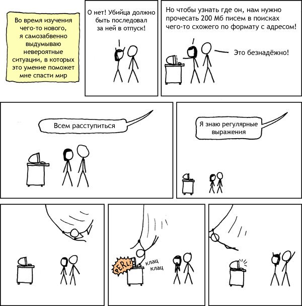

Урок 3. Функции и строковые методы
Повторение материала
Какие типы данных вы знаете?
Что такое литералы?
Что такое метод?
Что такое функция?
Чем метод отличается от функции?
Ответ
В функцию все данные передаются в скобочках.
В метод передается не только то, что в скобочках, но и то, от чего вызывается метод. Например "Hello World".lower(), здесь в lower() передастся строка "Hello World"
Как определить длину строки? Это метод или функция?
Срезы строк
Что будет выведено в каждой строке?
example_str = '0123456'
print(example_str[1])
print(example_str[1:2])
print(example_str[-1])
print(example_str[-2:-1])
print(example_str[-10])
print(example_str[10])
Строки - неизменяемый тип данных. Что это значит?
Почему пример ниже не противоречит изменяемости?
example_str = 'Hello world'
example_str = 'New Value' # Здесь я изменил строку, так почему же она не изменяемая
Ответ
Это не изменение, а присвоение. Я не изменил строку, а создал новую.
Я бы изменил строку если бы мог выполнить такой код: example_str[0] = 'N'
Пока разница может быть не очень понятна, но мы вернемся к этому, когда изучим списки
Какие строковые методы вы помните?
Не обязательно помнить все
Не обязательно помнить их написание, главное помнить, что они делают. Если они вам будут нужны, вы можете загуглить или вам подскажет IDE
Когда я пишу example_str.upper() изменяется ли исходная строка?
Что выведется в результате?
Ответ
Строки - неизменяемый тип, поэтом их ничто не может изменить. Строку можно только перезаписать присваиванием, но это не изменение!
Какой тип возвращает input, если я введу строку
Что введется в результате?
В чем отличие float и int?
Какие методы форматирования вы помните? Какой ваш любимый?
Зачем может пригодиться поиск подстроки в строке?
Содержание занятия
Регулярные выражения(regular expressions)
Что это?
Для поиска подстрок придумали очень гибкий инструмент, который позволяет находить подстроки под разные условия, он называется - регулярные выражения. Мы не будем их рассматривать их полностью изучать, потому что это большая тема, но я хочу вам показать, что можно делать при помощи них.

Хьюстон, у нас проблема
Перед нами стоит задача. Найти в тексте все строки hello, но в строке может быть опечатка. Например, пользователь вместо hello написал helvo. Такую строку мы тоже должны найти.
Если у нас всегда пользователь опечатывается только одним образом, то это легко сделать при помощи .find(). Например, если они опечатывается только как helvo. Получится такой код:
example_str = 'hello helvo random string to fill text'
hello_result = example_str.find('hello') != -1 # != - это не равно
helvo_result = example_str.find('helvo') != -1
print(f'Есть ли hello: {hello_result}')
print(f'Есть ли helvo: {helvo_result}')
А что делать если пользователь может в 4-й букве опечататься на любую букву? Тогда нам надо перечислять все, либо писать цикл:
hello_result = example_str.find('hello') != -1
helao_result = example_str.find('helao') != -1
helbo_result = example_str.find('helbo') != -1
# ... Я уже устал
example_str = 'hello helvo helao random string to fill text'
for missed_symbol in "abcdefghijklmnopqrstuvwxyz": # Циклы мы еще не проходили, не пугайтесь
finding_str = f'hel{missed_symbol}o'
result = example_str.find(finding_str) != -1
print(f'Строка {finding_str} найдена: {result}')
А что если пользователь в 4-й букве может опечатать на абсолютно любой символ? Нам что их все перечислять? Здесь нам на помощь приходят регулярные выражения. Мы напишем такой код:
# re = regular expressions, то есть регулярные выражения
from re import findall # Это импорт, мы еще их не проходили, но он просто добавляет новые функции
example_str = 'hello helvo hel0o another str'
regular_expression = r'hel.o' # Это регулярное выражение
results = findall(regular_expression, example_str) # Найти все подстроки, которые подходят под рег.выражение
print(results)
Давайте разберем r'hel.o':
rв начале означает, что это регулярное выражение, также как мы писалиfв начале строк с форматированием.означает, что туда может попасть любой символ
А если мы захотим найти все строки, которые начинаются с hel и имеют 5 букв? Какое регулярное выражение мы напишем?
hel..
Этим функционал регулярных выражение не ограничивается мы можем искать по очень гибкой логике. Например:
hello|helvoищет либоhello, либоhelvohel[0-9]oищетhel0o,hel1o,hel2oи т.дhel[abcd]oищетhelao,helbo,helco,heldo
Таких штук кучи и их можно комбинировать между собой. Например, так выглядит определитель корректно введенной почты:
Страшно, но работаетВывод
Регулярные выражения позволяют искать подстроки по очень сложной логике. Вот полезные ресурсы по этой теме:
Домашнее задание
- Прочитать главу 5 "Числа и математические вычисления"
- Сделать упражнения
- Самые интересные и сложные прислать мне в telegram